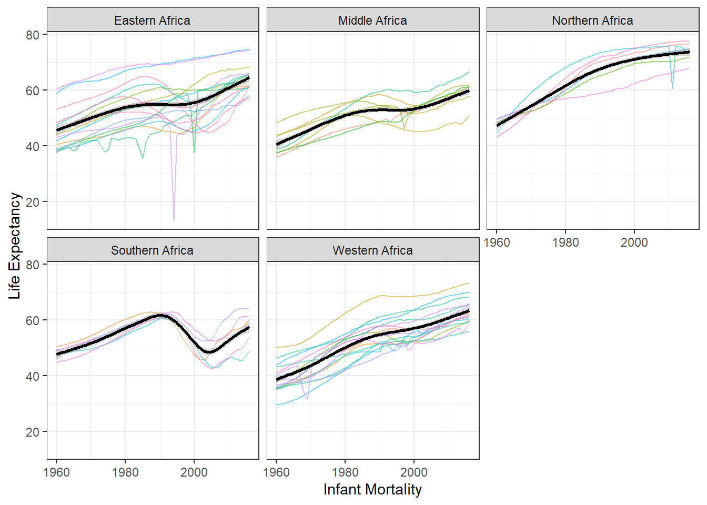

Zane’s R Coding Exercise
For this exercise, I want to work on the gapminder data from the dslabs package. First, I want to get an idea of what this dataset looks like.
# The dslabs package is where the data we want to use lives.
library(dslabs)
# We also need the tidyverse package for analysis later.
library(tidyverse)
# Use the scales package to make plot labels nicer
library(scales)
# Use the brooms package to help move data into easier format for tables
library(broom)
#Allows for easy to create tables from statistical data
library(knitr)
library(kableExtra)
# Open the help file for the gapminder data to examine contents.
help(gapminder)
# Examine the structure of the gapminder data
str(gapminder)## 'data.frame': 10545 obs. of 9 variables:
## $ country : Factor w/ 185 levels "Albania","Algeria",..: 1 2 3 4 5 6 7 8 9 10 ...
## $ year : int 1960 1960 1960 1960 1960 1960 1960 1960 1960 1960 ...
## $ infant_mortality: num 115.4 148.2 208 NA 59.9 ...
## $ life_expectancy : num 62.9 47.5 36 63 65.4 ...
## $ fertility : num 6.19 7.65 7.32 4.43 3.11 4.55 4.82 3.45 2.7 5.57 ...
## $ population : num 1636054 11124892 5270844 54681 20619075 ...
## $ gdp : num NA 1.38e+10 NA NA 1.08e+11 ...
## $ continent : Factor w/ 5 levels "Africa","Americas",..: 4 1 1 2 2 3 2 5 4 3 ...
## $ region : Factor w/ 22 levels "Australia and New Zealand",..: 19 11 10 2 15 21 2 1 22 21 ...# Get a summary of the gapminder data variables
summary(gapminder)## country year infant_mortality life_expectancy fertility
## Albania : 57 Min. :1960 Min. : 1.50 Min. :13.20 Min. :0.840
## Algeria : 57 1st Qu.:1974 1st Qu.: 16.00 1st Qu.:57.50 1st Qu.:2.200
## Angola : 57 Median :1988 Median : 41.50 Median :67.54 Median :3.750
## Antigua and Barbuda: 57 Mean :1988 Mean : 55.31 Mean :64.81 Mean :4.084
## Argentina : 57 3rd Qu.:2002 3rd Qu.: 85.10 3rd Qu.:73.00 3rd Qu.:6.000
## Armenia : 57 Max. :2016 Max. :276.90 Max. :83.90 Max. :9.220
## (Other) :10203 NA's :1453 NA's :187
## population gdp continent region
## Min. :3.124e+04 Min. :4.040e+07 Africa :2907 Western Asia :1026
## 1st Qu.:1.333e+06 1st Qu.:1.846e+09 Americas:2052 Eastern Africa : 912
## Median :5.009e+06 Median :7.794e+09 Asia :2679 Western Africa : 912
## Mean :2.701e+07 Mean :1.480e+11 Europe :2223 Caribbean : 741
## 3rd Qu.:1.523e+07 3rd Qu.:5.540e+10 Oceania : 684 South America : 684
## Max. :1.376e+09 Max. :1.174e+13 Southern Europe: 684
## NA's :185 NA's :2972 (Other) :5586# Print the class of the gapminder object
class(gapminder)## [1] "data.frame"For this exercise, I am only interested in the data from countries in Africa.
# Filter out records where the continent is "Africa"
africadata <- gapminder %>%
dplyr::filter(continent == "Africa")
# View structure and summary of the Africa-only data to see what changed.
str(africadata)## 'data.frame': 2907 obs. of 9 variables:
## $ country : Factor w/ 185 levels "Albania","Algeria",..: 2 3 18 22 26 27 29 31 32 33 ...
## $ year : int 1960 1960 1960 1960 1960 1960 1960 1960 1960 1960 ...
## $ infant_mortality: num 148 208 187 116 161 ...
## $ life_expectancy : num 47.5 36 38.3 50.3 35.2 ...
## $ fertility : num 7.65 7.32 6.28 6.62 6.29 6.95 5.65 6.89 5.84 6.25 ...
## $ population : num 11124892 5270844 2431620 524029 4829291 ...
## $ gdp : num 1.38e+10 NA 6.22e+08 1.24e+08 5.97e+08 ...
## $ continent : Factor w/ 5 levels "Africa","Americas",..: 1 1 1 1 1 1 1 1 1 1 ...
## $ region : Factor w/ 22 levels "Australia and New Zealand",..: 11 10 20 17 20 5 10 20 10 10 ...summary(africadata)## country year infant_mortality life_expectancy fertility
## Algeria : 57 Min. :1960 Min. : 11.40 Min. :13.20 Min. :1.500
## Angola : 57 1st Qu.:1974 1st Qu.: 62.20 1st Qu.:48.23 1st Qu.:5.160
## Benin : 57 Median :1988 Median : 93.40 Median :53.98 Median :6.160
## Botswana : 57 Mean :1988 Mean : 95.12 Mean :54.38 Mean :5.851
## Burkina Faso: 57 3rd Qu.:2002 3rd Qu.:124.70 3rd Qu.:60.10 3rd Qu.:6.860
## Burundi : 57 Max. :2016 Max. :237.40 Max. :77.60 Max. :8.450
## (Other) :2565 NA's :226 NA's :51
## population gdp continent region
## Min. : 41538 Min. :4.659e+07 Africa :2907 Eastern Africa :912
## 1st Qu.: 1605232 1st Qu.:8.373e+08 Americas: 0 Western Africa :912
## Median : 5570982 Median :2.448e+09 Asia : 0 Middle Africa :456
## Mean : 12235961 Mean :9.346e+09 Europe : 0 Northern Africa :342
## 3rd Qu.: 13888152 3rd Qu.:6.552e+09 Oceania : 0 Southern Africa :285
## Max. :182201962 Max. :1.935e+11 Australia and New Zealand: 0
## NA's :51 NA's :637 (Other) : 0The two relationships I am interested in are: * infant mortality and life expectancy, and * population and life expectancy.
# Create a data frame with only infant mortality and life expectancy
africa_im_le <- africadata %>%
dplyr::select(infant_mortality, life_expectancy)
str(africa_im_le)## 'data.frame': 2907 obs. of 2 variables:
## $ infant_mortality: num 148 208 187 116 161 ...
## $ life_expectancy : num 47.5 36 38.3 50.3 35.2 ...summary(africa_im_le)## infant_mortality life_expectancy
## Min. : 11.40 Min. :13.20
## 1st Qu.: 62.20 1st Qu.:48.23
## Median : 93.40 Median :53.98
## Mean : 95.12 Mean :54.38
## 3rd Qu.:124.70 3rd Qu.:60.10
## Max. :237.40 Max. :77.60
## NA's :226# Create a data frame with only population size and life expectancy
africa_ps_le <- africadata %>%
dplyr::select(population, life_expectancy)
str(africa_ps_le)## 'data.frame': 2907 obs. of 2 variables:
## $ population : num 11124892 5270844 2431620 524029 4829291 ...
## $ life_expectancy: num 47.5 36 38.3 50.3 35.2 ...summary(africa_ps_le)## population life_expectancy
## Min. : 41538 Min. :13.20
## 1st Qu.: 1605232 1st Qu.:48.23
## Median : 5570982 Median :53.98
## Mean : 12235961 Mean :54.38
## 3rd Qu.: 13888152 3rd Qu.:60.10
## Max. :182201962 Max. :77.60
## NA's :51Next I will visualize these two relationships.
# scatterplot of life expectancy vs infant mortality
africa_im_le %>%
# define which fields to plot
ggplot(aes(x = infant_mortality, y = life_expectancy)) +
# make the plot a scatterplot
geom_point() +
# change the way the plot looks (i.e. changing "non-data ink")
theme_bw() +
# make the axis titles nicer
labs(
x = "Infant mortality (deaths per 1000)",
y = "Life expectancy (years)"
)## Warning: Removed 226 rows containing missing values (geom_point).
# scatterplot of life expectancy vs population size
africa_ps_le %>%
# define which fields to plot
ggplot(aes(x = population, y = life_expectancy)) +
# make the plot a scatterplot
geom_point() +
# change the way the plot looks
theme_bw() +
# Make the axis titles nicer
labs(
x = "Population",
y = "Life expectancy (years)"
) +
# customize the x-axis scale
scale_x_continuous(
# use a log scale for population size
trans = "log10",
# format the values with commas rather than scientific notation
labels = scales::comma
)## Warning: Removed 51 rows containing missing values (geom_point).
Uh-oh! We can see that due to the inclusion of multiple years for each country, there is clearly autocorrelation and this makes the graphs look quite weird. We also got an error about missing data, with more data points missing for life expectancy.
Now I only want to plot one year at a time, so I will combine this with the missing data. First, I can find which years have missing data, and then I can choose a year to plot which does not have (or has the least amount of) missing values.
africadata %>%
# Filter for any rows where either variable is NA (missing)
dplyr::filter(is.na(infant_mortality) | is.na(life_expectancy)) %>%
# Count up the number of missing records for each year
dplyr::count(year, sort = TRUE, name = "# records missing")## year # records missing
## 1 2016 51
## 2 1961 17
## 3 1962 16
## 4 1963 16
## 5 1964 15
## 6 1965 14
## 7 1966 13
## 8 1967 11
## 9 1968 11
## 10 1960 10
## 11 1969 7
## 12 1971 6
## 13 1972 6
## 14 1973 6
## 15 1970 5
## 16 1974 5
## 17 1975 5
## 18 1976 3
## 19 1977 3
## 20 1978 2
## 21 1979 2
## 22 1980 1
## 23 1981 1It appears that for either of these two fields, there are missing records in 2016, and for years from 1961 through 1981. I will use the year 2000 for the next plot.
# Filter only records where the year is 2000
africadata_2000 <- africadata %>%
filter(year == 2000)
# Check to see if everything worked alright
str(africadata_2000)## 'data.frame': 51 obs. of 9 variables:
## $ country : Factor w/ 185 levels "Albania","Algeria",..: 2 3 18 22 26 27 29 31 32 33 ...
## $ year : int 2000 2000 2000 2000 2000 2000 2000 2000 2000 2000 ...
## $ infant_mortality: num 33.9 128.3 89.3 52.4 96.2 ...
## $ life_expectancy : num 73.3 52.3 57.2 47.6 52.6 46.7 54.3 68.4 45.3 51.5 ...
## $ fertility : num 2.51 6.84 5.98 3.41 6.59 7.06 5.62 3.7 5.45 7.35 ...
## $ population : num 31183658 15058638 6949366 1736579 11607944 ...
## $ gdp : num 5.48e+10 9.13e+09 2.25e+09 5.63e+09 2.61e+09 ...
## $ continent : Factor w/ 5 levels "Africa","Americas",..: 1 1 1 1 1 1 1 1 1 1 ...
## $ region : Factor w/ 22 levels "Australia and New Zealand",..: 11 10 20 17 20 5 10 20 10 10 ...summary(africadata_2000)## country year infant_mortality life_expectancy fertility population
## Algeria : 1 Min. :2000 Min. : 12.30 Min. :37.60 Min. :1.990 Min. : 81154
## Angola : 1 1st Qu.:2000 1st Qu.: 60.80 1st Qu.:51.75 1st Qu.:4.150 1st Qu.: 2304687
## Benin : 1 Median :2000 Median : 80.30 Median :54.30 Median :5.550 Median : 8799165
## Botswana : 1 Mean :2000 Mean : 78.93 Mean :56.36 Mean :5.156 Mean : 15659800
## Burkina Faso: 1 3rd Qu.:2000 3rd Qu.:103.30 3rd Qu.:60.00 3rd Qu.:5.960 3rd Qu.: 17391242
## Burundi : 1 Max. :2000 Max. :143.30 Max. :75.00 Max. :7.730 Max. :122876723
## (Other) :45
## gdp continent region
## Min. :2.019e+08 Africa :51 Eastern Africa :16
## 1st Qu.:1.274e+09 Americas: 0 Western Africa :16
## Median :3.238e+09 Asia : 0 Middle Africa : 8
## Mean :1.155e+10 Europe : 0 Northern Africa : 6
## 3rd Qu.:8.654e+09 Oceania : 0 Southern Africa : 5
## Max. :1.329e+11 Australia and New Zealand: 0
## (Other) : 0Now I can remake the plots using only the data from the year 2000, solving both plotting problems at the same time.
# scatterplot of life expectancy vs infant mortality
africadata_2000 %>%
# define which fields to plot
ggplot(aes(x = infant_mortality, y = life_expectancy)) +
# make the plot a scatterplot
geom_point() +
# change the way the plot looks (i.e. changing "non-data ink")
theme_bw() +
# make the axis titles nicer
labs(
x = "Infant mortality (deaths per 1000)",
y = "Life expectancy (years)"
)
# scatterplot of life expectancy vs population size
africadata_2000 %>%
# define which fields to plot
ggplot(aes(x = population, y = life_expectancy)) +
# make the plot a scatterplot
geom_point() +
# change the way the plot looks
theme_bw() +
# Make the axis titles nicer
labs(
x = "Population",
y = "Life expectancy (years)"
) +
# customize the x-axis scale
scale_x_continuous(
# use a log scale for population size
trans = "log10",
# format the values with commas rather than scientific notation
labels = scales::comma
)
Now we have a good idea what the relationships look like: I expect a negative linear relationship between life expectancy and infant mortality, and no relationship between life expectancy and population.
I will fit a simple linear model to test both of these predictions.
# Fit both of the simple linear models
fit1 <- lm(life_expectancy ~ infant_mortality, data = africadata_2000)
fit2 <- lm(life_expectancy ~ population, data = africadata_2000)
# Get information about both of the models
summary(fit1)##
## Call:
## lm(formula = life_expectancy ~ infant_mortality, data = africadata_2000)
##
## Residuals:
## Min 1Q Median 3Q Max
## -22.6651 -3.7087 0.9914 4.0408 8.6817
##
## Coefficients:
## Estimate Std. Error t value Pr(>|t|)
## (Intercept) 71.29331 2.42611 29.386 < 2e-16 ***
## infant_mortality -0.18916 0.02869 -6.594 2.83e-08 ***
## ---
## Signif. codes: 0 '***' 0.001 '**' 0.01 '*' 0.05 '.' 0.1 ' ' 1
##
## Residual standard error: 6.221 on 49 degrees of freedom
## Multiple R-squared: 0.4701, Adjusted R-squared: 0.4593
## F-statistic: 43.48 on 1 and 49 DF, p-value: 2.826e-08summary(fit2)##
## Call:
## lm(formula = life_expectancy ~ population, data = africadata_2000)
##
## Residuals:
## Min 1Q Median 3Q Max
## -18.429 -4.602 -2.568 3.800 18.802
##
## Coefficients:
## Estimate Std. Error t value Pr(>|t|)
## (Intercept) 5.593e+01 1.468e+00 38.097 <2e-16 ***
## population 2.756e-08 5.459e-08 0.505 0.616
## ---
## Signif. codes: 0 '***' 0.001 '**' 0.01 '*' 0.05 '.' 0.1 ' ' 1
##
## Residual standard error: 8.524 on 49 degrees of freedom
## Multiple R-squared: 0.005176, Adjusted R-squared: -0.01513
## F-statistic: 0.2549 on 1 and 49 DF, p-value: 0.6159From the first model (with infant mortality as the predictor), I obtain an estimated slope of about -0.19 (p < 0.001). Thus, I conclude that for African countries in the year 2000, an increase of 1 infant death out of every 1000 births was associated with a decrease of 0.19 years in life expectancy (about -2.28 months).
From the second model (with population size as the predictor), I obtained a very very small slope which rounds to 0 unless I use an unreasonable amount of precision. Since the p-value is also quite large (p = 0.6159), I think it is reasonable to conclude that there was no (linear) relationship between life expectancy and population size for African countries in the year 2000.
Part 2
Now that we have examined if a correlation exists between life expectancy and population and life expectancy and infant mortality, let us now analyze GDP and life expectancy and GDP and population with the data from African countries in the year 2000 to determine if there exists a relationship.
africadata_2000 %>%
ggplot(aes(x=life_expectancy, y=gdp))+
geom_point()+
ggtitle("Comparison of life expectancy and gdp in Africa")+
xlab("life expectancy")+
scale_x_continuous(name="life expectancy", labels = comma) +
ylab("gdp")It appears as though there is no correlation between life expectancy and GDP. We will now examine if there is a relationship between population and GDP.
africadata_2000 %>%
ggplot(aes(x=population, y=gdp))+
geom_point()+
ggtitle("Comparison of Life Expectancy and Population Size in Africa")+
xlab("Population")+
scale_x_continuous(name="Population", labels = comma)+
ylab("GDP")+
scale_y_continuous(name="GDP", labels = comma)
It appears as though there is correlation between population size and GDP, as greater population size has the effect of increasing GDP.
The last step we will do is to utilize linear regression models to compare the two plots for any link, note that we will use fit3 and fit4, as fit1 and 2 have already been used.
fit3 <-lm(gdp ~ life_expectancy, data=africadata_2000)
fit4 <-lm(gdp ~ population, data = africadata_2000)Now we summarize our models
summary(fit3)##
## Call:
## lm(formula = gdp ~ life_expectancy, data = africadata_2000)
##
## Residuals:
## Min 1Q Median 3Q Max
## -2.518e+10 -9.742e+09 -5.227e+09 1.656e+09 1.213e+11
##
## Coefficients:
## Estimate Std. Error t value Pr(>|t|)
## (Intercept) -4.367e+10 2.219e+10 -1.968 0.0548 .
## life_expectancy 9.799e+08 3.895e+08 2.516 0.0152 *
## ---
## Signif. codes: 0 '***' 0.001 '**' 0.01 '*' 0.05 '.' 0.1 ' ' 1
##
## Residual standard error: 2.33e+10 on 49 degrees of freedom
## Multiple R-squared: 0.1144, Adjusted R-squared: 0.09632
## F-statistic: 6.329 on 1 and 49 DF, p-value: 0.0152summary(fit4)##
## Call:
## lm(formula = gdp ~ population, data = africadata_2000)
##
## Residuals:
## Min 1Q Median 3Q Max
## -3.559e+10 -6.289e+09 -2.926e+09 -9.143e+08 1.028e+11
##
## Coefficients:
## Estimate Std. Error t value Pr(>|t|)
## (Intercept) 1.621e+09 3.499e+09 0.463 0.645
## population 6.343e+02 1.301e+02 4.875 1.19e-05 ***
## ---
## Signif. codes: 0 '***' 0.001 '**' 0.01 '*' 0.05 '.' 0.1 ' ' 1
##
## Residual standard error: 2.032e+10 on 49 degrees of freedom
## Multiple R-squared: 0.3266, Adjusted R-squared: 0.3129
## F-statistic: 23.77 on 1 and 49 DF, p-value: 1.186e-05Because the final p-value of the third model is 0.0152, which is less than 0.05, we can conclude that there does exist a positive correlation between life expectancy and gdp.
Because the final p-value of the fourth model is 1.186e-05, which is less than 0.-05, we can conclude that there is a substantial correlation between population and gdp.
Next, we will create a multiple linear regression model using gdp as the outcome and both life expectancy and population size as independent variables, which will allow us to examine further the strenghts of these relationships between variables. We will then utiliae a table for easy to understand output. Note that we will call this new model fit5
fit5 <-lm(gdp ~ life_expectancy + population, data = africadata_2000)
##We will then summarize the output
summary(fit5)##
## Call:
## lm(formula = gdp ~ life_expectancy + population, data = africadata_2000)
##
## Residuals:
## Min 1Q Median 3Q Max
## -3.069e+10 -7.349e+09 -2.382e+09 2.735e+09 1.034e+11
##
## Coefficients:
## Estimate Std. Error t value Pr(>|t|)
## (Intercept) -4.677e+10 1.823e+10 -2.566 0.01348 *
## life_expectancy 8.652e+08 3.206e+08 2.699 0.00957 **
## population 6.104e+02 1.228e+02 4.971 8.91e-06 ***
## ---
## Signif. codes: 0 '***' 0.001 '**' 0.01 '*' 0.05 '.' 0.1 ' ' 1
##
## Residual standard error: 1.913e+10 on 48 degrees of freedom
## Multiple R-squared: 0.4153, Adjusted R-squared: 0.391
## F-statistic: 17.05 on 2 and 48 DF, p-value: 2.544e-06Finally we need to create an easy to understand table
fit5%>%
tidy() %>%
kbl() %>%
kable_material_dark("hover", full_width=F, html_font='times')| term | estimate | std.error | statistic | p.value |
|---|---|---|---|---|
| (Intercept) | -4.677196e+10 | 1.822972e+10 | -2.565698 | 0.0134752 |
| life_expectancy | 8.652215e+08 | 3.205650e+08 | 2.699052 | 0.0095719 |
| population | 6.104375e+02 | 1.228064e+02 | 4.970732 | 0.0000089 |
Therefore, we can conclude that with a p-value of <0.05, there is significance between GDP, life expectancy, and population. If the p-value is lowered to be even more specific at <0.01, there still exists a statistically significant relationship between gdp and life expectancy adjusting for population size.